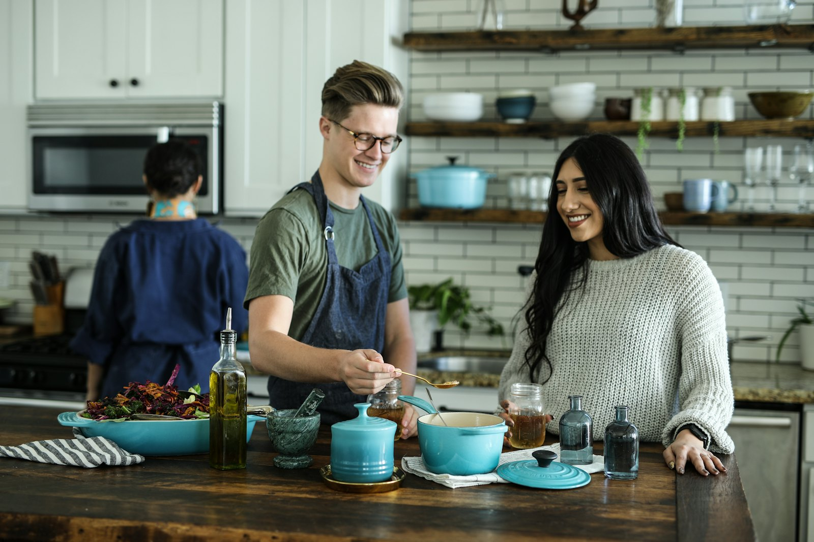
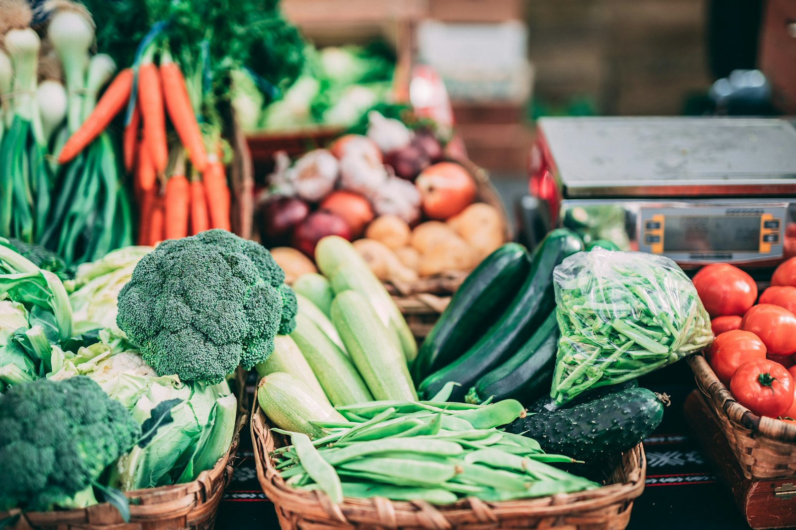
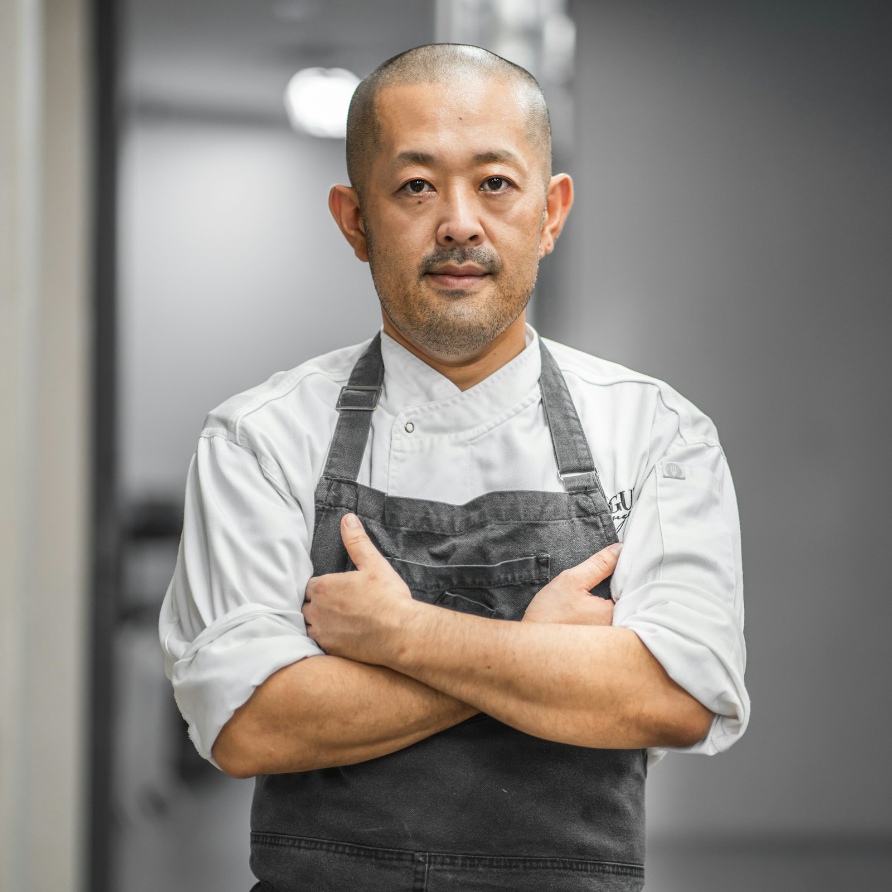
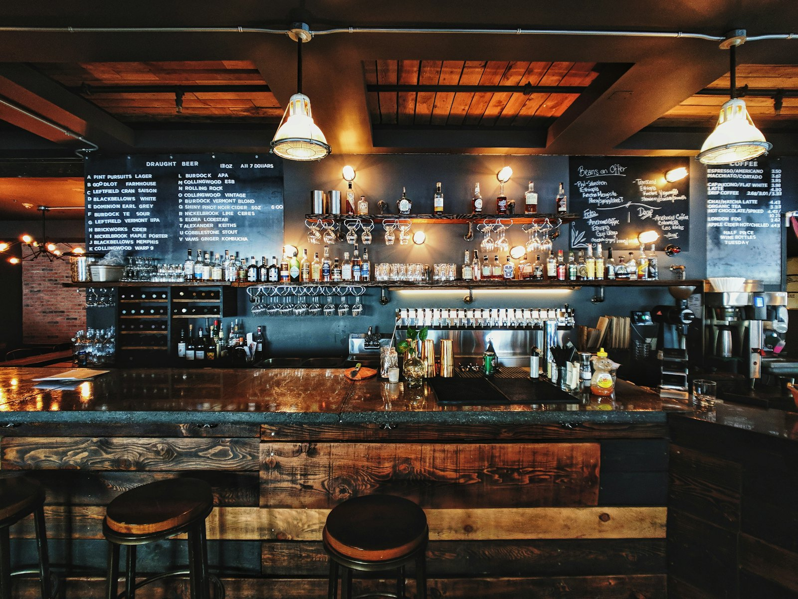

Elena Marchetti
Executive Chef & Co-founder
Trained in Marseille; still tastes every sauce before service.
Our Story
Savor Bistro opened its doors in 2014 with twelve tables, one wood-fired hearth, and a stubborn belief: that a neighborhood bistro can cook at the level of a destination restaurant without losing its sense of humor. Chef Elena Marchetti came up through Marseille kitchens and a decade of farmers market stalls before signing the lease on a former print shop on Meridian Avenue.
The cooking is seasonal to a fault. Ninety percent of our produce travels fewer than 150 miles - heirloom tomatoes and basil from Vargas Family Farm in Hollister, mushrooms foraged from the coastal range, olive oil pressed for us each November. The saffron in our risotto is the one deliberate exception, flown in from a family cooperative in Abruzzo that Elena has worked with since her apprenticeship.
We refresh the menu the moment the market shifts, keep a natural-leaning wine list built around growers we have actually visited, and treat dining room regulars and first-timers with the same warmth. That is the whole philosophy: buy beautifully, cook precisely, be generous.


We print our growers on the menu because they earn it. Ask your server where anything on the plate came from - someone here will know.

Four of the faces you will meet on any given night.
Executive Chef & Co-founder
Trained in Marseille; still tastes every sauce before service.

Sous Chef
Runs the hearth station and our Saturday farmers market runs.
General Manager
Keeps the room calm, the books honest, and the regulars remembered.

Bar Lead & Sommelier
Built a wine list that rewards curiosity; shakes a mean spritz.
The best way to understand the restaurant is to taste it.